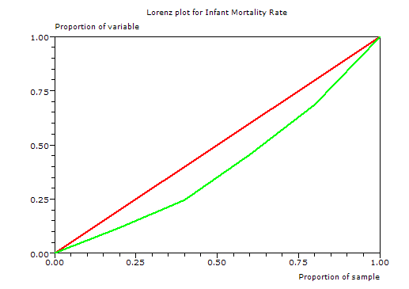

Gini Coefficient of Inequality
Menu location: Analysis_Nonparametric_Gini Coefficient of Inequality
This method calculates the Gini coefficient (G) of inequality with bootstrap confidence intervals. A Lorenz plot is produced when a single variable is specified for analysis, otherwise the summary statistics alone are displayed for a group of variables.
The Gini coefficient was developed by the Italian Statistician Corrado Gini (Gini, 1912) as a summary measure of income inequality in society. It is usually associated with the plot of wealth concentration introduced a few years earlier by Max Lorenz (Lorenz, 1905). Since these measures were introduced, they have been applied to topics other than income and wealth, but mostly within Economics (Cowell, 1995, 2000; Jenkins, 1991; Sen, 1973).
G is a measure of inequality, defined as the mean of absolute differences between all pairs of individuals for some measure. The minimum value is 0 when all measurements are equal and the theoretical maximum is 1 for an infinitely large set of observations where all measurements but one has a value of 0, which is the ultimate inequality (Stuart and Ord, 1994).
When G is based on the Lorenz curve of income distribution, it can be interpreted as the expected income gap between two individuals randomly selected from the population (Sen, 1973).
The classical definition of G appears in the notation of the theory of relative mean difference:

- where x is an observed value, n is the number of values observed and x bar is the mean value.
If the x values are first placed in ascending order, such that each x has rank i, the some of the comparisons above can be avoided and computation is quicker:

- where x is an observed value, n is the number of values observed and i is the rank of values in ascending order.
Note that only positive non-zero values are used.
The small sample variance properties of G are not known, and large sample approximations to the variance of G are poor (Mills and Zandvakili, 1997; Glasser, 1962; Dixon et al., 1987), therefore confidence intervals are calculated via bootstrap re-sampling methods (Efron and Tibshirani, 1997).
StatsDirect calculates two types of bootstrap confidence intervals, these are percentile and bias-corrected (Mills and Zandvakili, 1997; Dixon et al., 1987; Efron and Tibshirani, 1997). The bias-corrected intervals are most appropriate for most applications.
In order for G to be an unbiased estimate of the true population value, it should be multiplied by n/(n-1) (Dixon, 1987; Mills and Zandvakili, 1997). This corrected form of G does not appear most literature, but there are few situations when it is not the most appropriate form to use.
In the context of measuring inequalities in health, Brown (1994) presents a Gini-style index, seemingly calculated from two variables instead of one. The two variables comprise distinct indicators of health (y, e.g. infant deaths) and population (x, live births) for n groups sorted by a composite measure of health and population (e.g. infant mortality rate).

Gb based on two variables (e.g. infant deaths and live births) will be very similar to G calculated from a composite measure (e.g. infant mortality rate). In most situations it is more natural to think of inequality of the composite measure. Another reason not to use Gb is that its statistical characteristics are not well studied.
StatsDirect does not provide a separate function to handle distinct health and population variables when calculating Gini coefficients, instead you should use the single composite health/population measure.
The Pan American Health Organisation (2001) gave the following illustration:
| Country | GNP per capita | infant mortality rate (IMR) | live births | infant deaths |
| Bolivia | 2860 | 59 | 250 | 14750 |
| Peru | 4410 | 43 | 621 | 26703 |
| Ecuador | 4730 | 39 | 308 | 12012 |
| Colombia | 6720 | 24 | 889 | 21336 |
| Venezuela | 8130 | 22 | 568 | 12496 |
Positive non-zero observations = 5
Bootstrap re-samples = 2000
Bias = 0.057218
Brown's Gb = 0.1904
Gini coefficient = 0.19893
Percentile 95% CI = 0.023645 to 0.219277
Bias-corrected 95% CI = 0.151456 to 0.241304
Unbiased estimator of population Gini coefficient = 0.248663
Percentile 95% CI = 0.029557 to 0.274096
Bias-corrected 95% CI = 0.18932 to 0.30163

This example uses too few groups for reliable inference from G.
Technical notes
The percentile confidence interval is defined as:

- where g* is a Gini coefficient estimated from a bootstrap sample and a is (100-confidence level)/100.
The bias-corrected confidence interval is defined as:

- where g* is a Gini coefficient estimated from a bootstrap sample, G is the observed Gini coefficient, α is (100-confidence level)/100, ϕ is the standard normal distribution and k is the number of re-samples in the bootstrap.